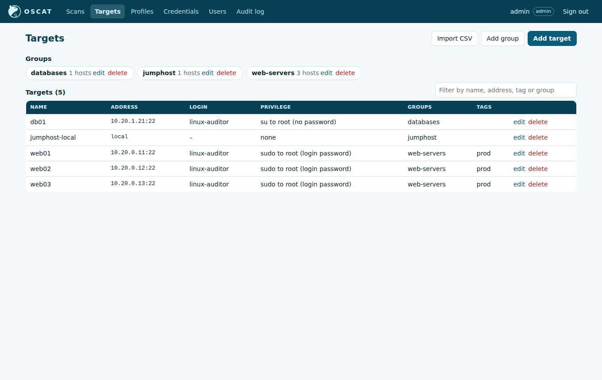
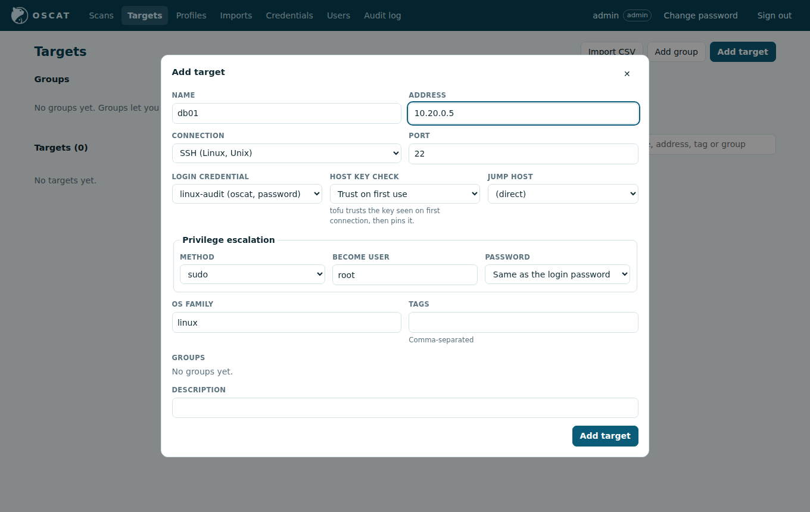

Credentials and targets
Credentials
A credential is a login account OSCAT uses. Administrators manage them on the Credentials page, or with + Add a credential… at the end of the credential list on a new scan; auditors can choose them for a scan but never see their secrets.
| Type | Fields |
|---|---|
| Password | username and password. Leave the username empty for a password used only for privilege escalation, such as root's password for su. |
| SSH private key | username, the key (paste it or load it from a file) and its passphrase if it is encrypted |
Secrets are encrypted with the master key as soon as they are saved, decrypted only while a scan runs, and never shown again; editing a credential with the secret field left empty keeps the stored one. Passwords are never put on a command line on the audited host.
Targets
A target is one host or appliance. Hosts typed into a new scan are saved as targets automatically (see Running scans). You can also add them on the Targets page with Add target, or many at once with Import CSV.


A target only says what a host is and where. The login (connection, credential, privilege escalation) is chosen on each scan, like in Nessus: one login for every host of the scan.
| Field | Meaning |
|---|---|
| Name | how the host appears in results and reports |
| Address | host name or IP |
| Platform | Linux, Unix, Windows, network / firewall device or Cisco APIC. A new scan greys out saved targets whose platform doesn't fit its benchmark, with the reason. |
| This is the OSCAT server itself | scan the OSCAT server locally, with no login |
| Tags | free labels to sort and find hosts |
| Groups | groups the target belongs to |
OSCAT also remembers each host's SSH host key and WinRM certificate the first time it connects (trust on first use) and refuses a different one later. After a host is rebuilt or its certificate renewed on purpose, click forget pinned key on its row; the next scan trusts the new one.
Login options (chosen on each scan)
SSH options
| Field | Choices |
|---|---|
| Host key check | Trust on first use (pins the key seen the first time, then refuses changes), Strict (key must already be known), Ignore (not recommended) |
| Advanced → Connect through (SSH bastion) | log in to a saved Linux host first and reach every host of the scan from it; the Bastion credential is the scan's credential unless you choose another |
Privilege escalation (become)
Many CIS checks read files only root can read. Checks marked privilege: root in the
profile run through the method chosen here; the others run as the login user.
| Field | Choices |
|---|---|
| Method | None (run as the login user), sudo, sudo -i, sudo su -, su -, dzdo, doas, pbrun, pmrun; see Privilege escalation methods |
| Become user | normally root |
| Password | Same as the login password, From another credential (for example root's password for su), or No password (NOPASSWD rules) |
The password is sent to the escalation prompt over the SSH session, never on the command line. If escalation fails, the root checks are reported as Error with the reason, and the other checks still run.
Privilege escalation methods
Pick the one your servers' sudoers or privilege policy allows for the login account.
| Method | What OSCAT runs | Password it answers | Use it when |
|---|---|---|---|
| sudo | sudo -u root /bin/sh -c ... |
the login user's | the account may run any command with sudo |
| sudo -i | sudo -i -u root ... (a root login shell) |
the login user's | sudoers allows only a root shell, such as sudo -i or sudo bash |
| sudo su - | sudo su - root -c ... |
the login user's | sudoers allows only su, such as sudo su - |
| su - | su - root -c ... |
root's (use From another credential) | there is no sudo, but you know root's password |
| dzdo | like sudo | the login user's | Centrify or Delinea manages privileges |
| doas | doas -u root ... |
the login user's | BSD or Alpine hosts |
| pbrun | pbrun -u root ... |
as the BeyondTrust policy asks | BeyondTrust PowerBroker manages privileges |
| pmrun | pmrun ... |
as the One Identity policy asks | One Identity Privilege Manager manages privileges; its policy picks the user, so there is no Become user |
To log in as root directly, use a root credential and set the method to None.
WinRM and APIC options
See Windows and Cisco APIC for the transport, authentication and certificate options.
This server (local)
Audits the jumphost itself without logging in. It is not available on a Windows jumphost.
Groups
Groups collect targets so a scan can cover them together (for example web, db,
dc-jakarta). Create them on the Targets page; a target can be in several groups.
Scan results and reports show each host's groups.
Importing targets from CSV
Targets → Import CSV creates or updates targets from a CSV file. Only name and
address are required; a row whose name already exists updates that target.
| Column | Example | Notes |
|---|---|---|
name |
web1 |
required |
address |
10.0.0.11 |
required |
port |
22 |
defaults by connection |
connection |
ssh |
ssh, winrm, apic, local |
os_family |
linux |
|
groups |
web;dc-jakarta |
separated by ;; missing groups are created |
tags |
prod;pci |
separated by ; |
credential |
audit-ssh |
the credential's name |
become_method |
sudo |
sudo, sudo-i, sudo-su, su, dzdo, doas, pbrun, pmrun |
become_password |
login |
login, credential or none |
become_credential |
root-pw |
credential name, when become_password is credential |
scheme |
https |
WinRM/APIC: https or http |
winrm_auth |
negotiate |
negotiate, kerberos, ntlm, credssp, basic |
cert_validation |
verify |
verify or ignore |
name,address,groups,credential,become_method,become_password
web1,10.0.0.11,web,audit-ssh,sudo,login
web2,10.0.0.12,web,audit-ssh,sudo,login
db1,10.0.0.21,db,audit-ssh,su,credential
The result lists how many were created and updated, and every rejected line with the reason.
Inventory files (command line)
The oscat command-line scanner reads targets from a YAML inventory instead. It holds
hosts, groups and references to secrets, never the secrets themselves:
defaults:
username: auditor
password: {env: OSCAT_SSH_PASSWORD} # or {prompt: "SSH password"} / {file: path}
become: {method: sudo, password: login} # sudo | sudo-i | sudo-su | su | dzdo | doas | pbrun | pmrun
host_key_policy: tofu # strict | tofu | ignore
groups:
web: {hosts: [web1, web2]}
db:
hosts: [db1]
vars:
become: {method: su, password: {prompt: "root password"}}
hosts:
web1: {address: 10.0.0.11}
web2: {address: 10.0.0.12}
db1:
address: 10.0.0.21
key_file: ~/.ssh/audit_ed25519
jump: {host: bastion.example.net, username: auditor, key_file: ~/.ssh/bastion}
Settings are merged from defaults, then group vars, then the host entry.